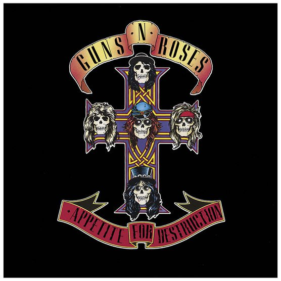

Legacy
The band made it out of an early morning video play on MTV to topping the Billboard 200. Their iconic debut album is the best selling debut album of all time. There has been a lot of praise for Guns n' Roses by peers in the music industry. They have often been compared to the Rolling Stones, as many say they could've if they had stayed together. Aerosmith guitarist Joe Perry stated that they were the first band to remind him of Led Zeppelin. It has also been said that they were the band all LA Sunset Strip bands wanted to be. They have been in many lists of appraisal, including being 9th on VH1's best hard rock artists of all time, and 32nd on it's best artists of all time. "Appetite for Destruction" was also ranked 62nd on Rolling Stone's "500 Greatest Albums of All Time", and Guns n' Roses are rankde 92nd on The Rolling Stone's "100 Greatest Artists of All Time". Guns n' Roses were inducted into the Rock and Roll Hall of Fame in 2012. All in all, they have created a lasting image as one of the most powerful hard rock bands in history.
Style & Influences
The playing style of Guns n' Roses is described as a mix of punk rock, blues rock, heavy metal, hair metal, and hard rock. The group tried out art rock in the Illusions albums, and also put some of their punk rock influences in their cover album "The Spaghetti Incident?". Later on, the band experimented with industrial and electronic rock. GNR are influenced by may different sources. One of the biggest influence was Hanoi Rocks, which put a huge influence on Guns n' Roses' sound. Other bands and artists that heavily influenced Guns n' Roses were Queen, AC/DC, the Rolling Stones, Aerosmith, and Rose Tattoo. Their first album "Appetite for Destruction" was influenced by plenty of hard rock bands including Led Zeppelin, New York Dolls, and much more. The Illusions albums were more orchestral and were more influenced from Elton John, Queen, and Electric Light Orchestra. Many other bands are influenced by Guns n' Roses, including Fall Out Boy, Avenged Sevenfold, and Black Label Society.
Criticism
Guns n' Roses have been largely criticized for heavy drug use and length between studio albums. Also some songs are considered, including "One in a Million", which includes racist lyrics, and "Look at your Game Girl", which is a cover of a song by serial killer, Charles Manson. The band has also been heavily criticized for being late for performances and concerts, and cancelling, which has caused many riots in many cities.
Awards
American Music Awards
- 1989: Favorite Pop/Rock single – "Sweet Child o' Mine"
- 1990: Favorite Heavy Metal/Hard Rock Artist
- 1990: Favorite Heavy Metal/Hard Rock Album – Appetite for Destruction
- 1992: Favorite Heavy Metal/Hard Rock Artist
Billboard Touring Awards
- 2017: Top Tour/ Top Draw - "Not In This Lifetime... Tour"
MTV Video Music Awards
- 1988: Best New Artist in a Video – "Welcome to the Jungle"
- 1989: Best Heavy Metal Video – "Sweet Child o' Mine"
- 1992: Video Vanguard Award
- 1992: Best Cinematography in a Video – "November Rain"
Revolver Golden Gods
- 2014: Ronnie James Dio Lifetime Achievement Award – Axl Rose
World Music Awards
- 1993: World's Best-Selling Hard Rock Artist of the Year
- 1993: World's Best Group